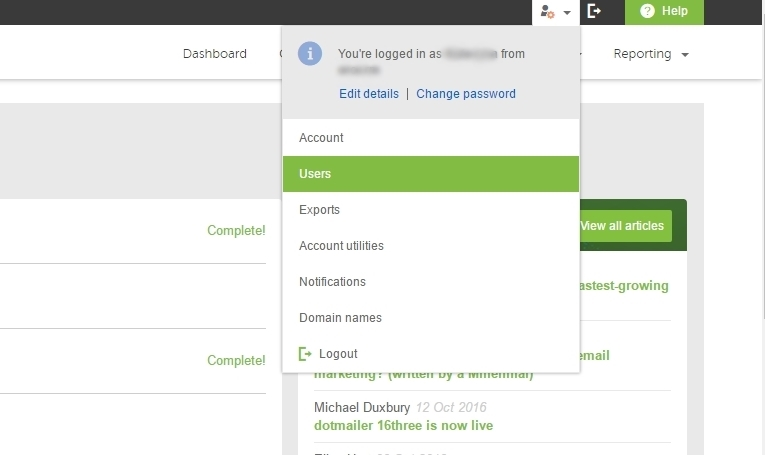
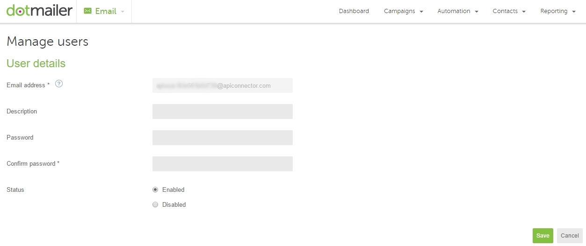
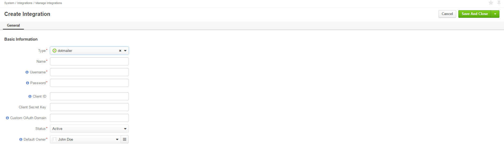
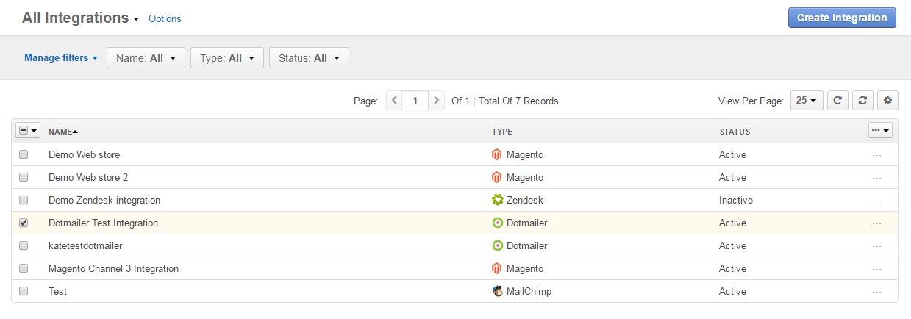

To configure dotmailer integration, ensure that you have dotmailer extension installed in your instance of OroCRM. For installation instructions, click here.
To configure integration with OroCRM and OroCommerce on the dotmailer side, you need to create an API managed user. In order to do that:
Log in to dotmailer.
Navigate to your name in the upper-right corner of the page.
Click Users in the dropdown menu.
Select the API Users tab.
Click the New User button.
Your unique email address will be generated in the Email Address field. You need this email address to configure OroCRM integration with dotmailer.
6. Next, create and confirm your Password. The Description field is optional. Mark your user Enabled and click Save to proceed.

Log into OroCRM and navigate to System > Integrations > Manage Integrations.
Click Create Integration in the upper-right corner of the page.
Next, complete the following fields:
| Field | Description |
|---|---|
| Type | Select dotmailer from the list of integrations available in the dropdown. |
| Name | Enter the integration name to refer to within the system. |
| Username | Enter an API user name from your dotmailer Manage users page. |
| Password | Enter the password you set for your API user on the dotmailer side. Click Check connection. Connection Successful message indicates that connection to dotmailer has been established. |
| Client ID | The dotmailer uses OAuth 2.0 to provide single sign-on. Client ID is the ID of the OAuth 2.0 making the request. Single sign -on provides the means for a dotmailer user to log into their account just once, removing the need to constantly re-enter credentials. To register to use OAuth you will need to be on an dotmailer Enterprise license and to contact your dotmailer account manager. More information on sign-on is available in the Configure Single Sign-on section of the guide. |
| Client Secret key | The pre-shared client secret, used to authenticate your application when making token request. |
| Custom OAuth Domain | Enter custom domain if it is used in dotmailer. By default https://r1-app.dotmailer.com/ is used. |
| Default Owner | Select the owner of the integration. The selected user will be defined as the owner for all the records imported within the integration. |
Once all the details of the integration have been specified, click Save and Close.
As soon as the integration is successfully configured, it will appear in the integration grid.
In addition, dotmailer menu group will become available under Marketing in the main menu.
The dotmailer menu group contains the following sections:
In order to sync dotmailer integration: